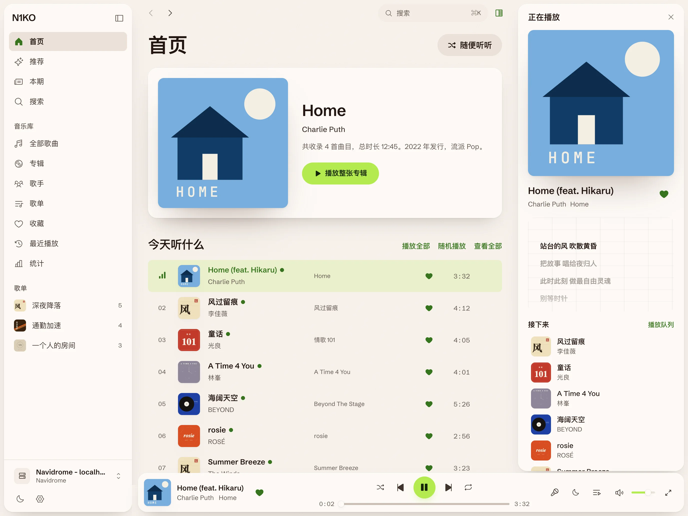
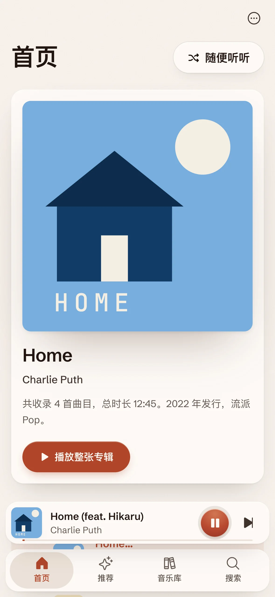
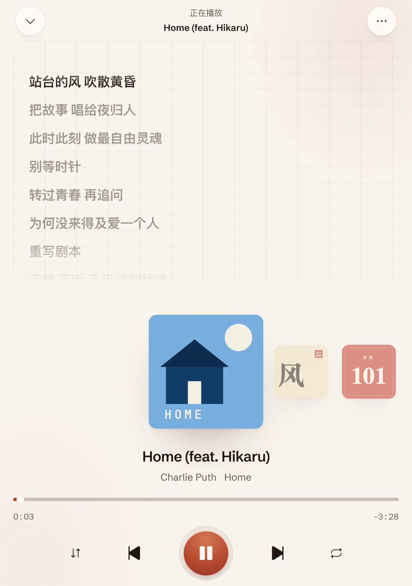
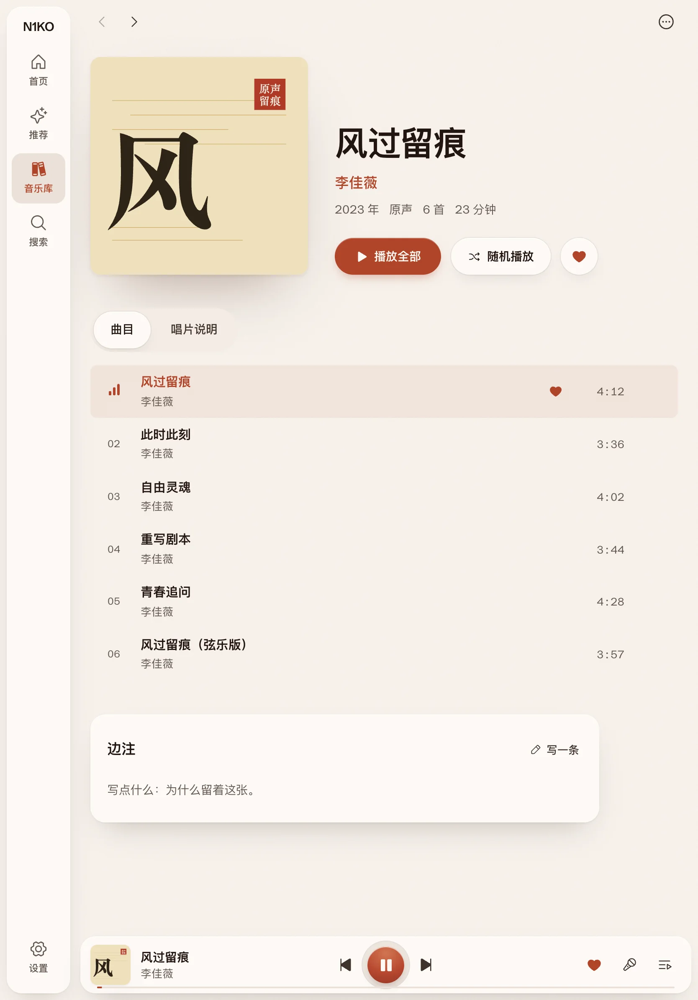
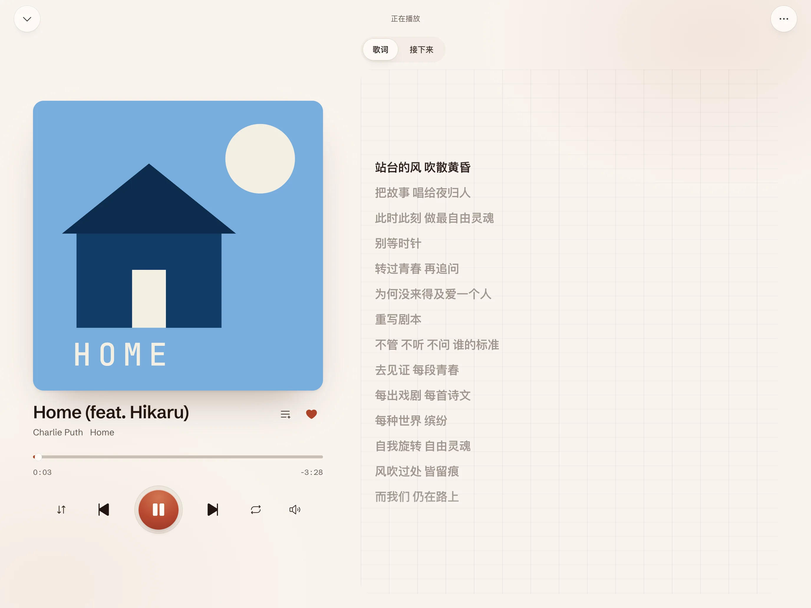

播放
- 全库随机，从服务器抽样
- 无损直通，或三档码率
- 队列放完自动接相似曲目

只看窗口有多宽，不看是什么设备。iPhone、展开的 iPhone Duo、iPad 分屏和桌面，各拿到合适的那一套。



当前封面的色相落进房间的光里。亮度按主题固定，所以不管封面是什么颜色，字都读得清。点下面的画面，看光怎么换。

光场取自当前封面。歌词放得很大，正在唱的那一行全亮。它从播放条上展开，封面从迷你播放条飞过来。
iPad 横过来，正在播放变成一叠大封面：用力一甩一路飞过去、再稳稳停住，点最前面那张就放。
新封面的颜色从它所在的位置向外铺开，把上一首的光推出去。系统开了「减弱动态效果」时只换颜色，不铺开。
接上妙控键盘或触控板，桌面上那套操作都在。按住 ⌘ 一秒，屏幕上会列出全部快捷键。
两种来源并排：搜索按来源分组，队列里混着放。
可选能力是探测出来的，不是假设的：服务器没有的功能，入口就不出现。流媒体只放你账号有权听的内容，会员曲目标明原因，不做任何「解析」。
插件不能碰页面，也不能自己联网。
只放行 manifest 列出的域名，重定向逐跳复查。
和服务器密码同一把设备密钥，不出本机。
没有埋点，没有崩溃上报，也没有可以发过去的服务器。
完全免费，完全开源。挑你的平台，几秒钟开始。
糯米（白兔，黄背带裤）和毛豆（绿青蛙，戴耳机）只出现在开屏、欢迎页、空列表和出错的时候。两个角色的形象版权归作者 N1KO 所有，不随 MIT 许可授权。
macOS 首次打开若提示「无法验证开发者」，到「系统设置」的「隐私与安全性」里允许即可；若提示「已损坏」，终端执行 xattr -cr "/Applications/N1KO MUSIC.app" 后再打开。不想装应用？用 Docker 跑 Web 版，一条命令。